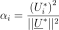
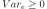

SimulationResult¶
-
class
SimulationResult(*args)¶ Simulation result.
Notes
Structure created by the method run() of a
Simulation, and obtained thanks to the method getResult().Examples
>>> import openturns as ot >>> ot.RandomGenerator.SetSeed(0) >>> limitState = ot.SymbolicFunction(['E', 'F', 'L', 'I'], ['-F*L^3/(3.*E*I)']) >>> # Enable the history mecanism in order to use the getImportanceFactors method >>> limitState.enableHistory() >>> myDistribution = ot.Normal([50.0, 1.0, 10.0, 5.0], [1.0]*4, ot.IdentityMatrix(4)) >>> output = ot.RandomVector(limitState, ot.RandomVector(myDistribution)) >>> myEvent = ot.Event(output, ot.Less(), -3.0) >>> myLHS = ot.LHS(myEvent) >>> myLHS.run() >>> SimulationLHSResult = myLHS.getResult() >>> print(SimulationLHSResult.getImportanceFactors()) [X0 : 0.000722617, X1 : 0.635094, X2 : 0.275692, X3 : 0.0884917]
Methods
drawImportanceFactors()Draw the importance factors as an OpenTURNS Graph.getBlockSize()Accessor to the block size. getClassName()Accessor to the object’s name. getCoefficientOfVariation()Accessor to the coefficient of variation. getConfidenceLength(*args)Accessor to the confidence length. getEvent()Accessor to the event. getId()Accessor to the object’s id. getImplementation(*args)Accessor to the underlying implementation. getImportanceFactors()Accessor to the importance factors. getMeanPointInEventDomain()Accessor to the mean point conditioned to the event realization. getName()Accessor to the object’s name. getOuterSampling()Accessor to the outer sampling. getProbabilityEstimate()Accessor to the probability estimate. getStandardDeviation()Accessor to the standard deviation. getVarianceEstimate()Accessor to the variance estimate. setBlockSize(blockSize)Accessor to the block size. setName(name)Accessor to the object’s name. setOuterSampling(outerSampling)Accessor to the outer sampling. setProbabilityEstimate(probabilityEstimate)Accessor to the probability estimate. setVarianceEstimate(varianceEstimate)Accessor to the variance estimate. -
__init__(*args)¶ x.__init__(…) initializes x; see help(type(x)) for signature
-
drawImportanceFactors()¶ Draw the importance factors as an OpenTURNS
Graph.Warning
It is necessary to enable the history of the model to perform this analysis (see
enableHistory()).See also
-
getBlockSize()¶ Accessor to the block size.
Returns: blockSize : int
Number of terms in the probability simulation estimator grouped together.
-
getClassName()¶ Accessor to the object’s name.
Returns: class_name : str
The object class name (object.__class__.__name__).
-
getCoefficientOfVariation()¶ Accessor to the coefficient of variation.
Returns: coefficient : float
Coefficient of variation of the simulated sample which is equal to
 with the variance estimate and
the probability estimate.
with the variance estimate and
the probability estimate.
-
getConfidenceLength(*args)¶ Accessor to the confidence length.
Parameters: level : float,
Confidence level. By default, it is .
Returns: confidenceLength : float
Length of the confidence interval at the confidence level level.
-
getId()¶ Accessor to the object’s id.
Returns: id : int
Internal unique identifier.
-
getImplementation(*args)¶ Accessor to the underlying implementation.
Returns: impl : Implementation
The implementation class.
-
getImportanceFactors()¶ Accessor to the importance factors.
Returns: importanceFactors :
PointWithDescriptionSequence containing the importance factors with a description for each component.
See also
Notes
The importance factors are evaluated from the coordinates of the mean point of event domain , mapped into the standard space as follows:

where with
 the iso-probabilistic transformation and the mean point
.
the iso-probabilistic transformation and the mean point
.Warning
This notion is only available if the history mecanism of the model is activated (see
enableHistory()).
-
getMeanPointInEventDomain()¶ Accessor to the mean point conditioned to the event realization.
Returns: meanPoint :
PointMean point in the physical space of all the simulations generated by the
Simulationalgorithm that failed into the event domain.Notes
Warning
This notion is only available if the history mecanism of the model is activated (see
enableHistory()).
-
getName()¶ Accessor to the object’s name.
Returns: name : str
The name of the object.
-
getOuterSampling()¶ Accessor to the outer sampling.
Returns: outerSampling : int
Number of groups of terms in the probability simulation estimator.
-
getProbabilityEstimate()¶ Accessor to the probability estimate.
Returns: probaEstimate : float
Estimate of the event probability.
-
getStandardDeviation()¶ Accessor to the standard deviation.
Returns: sigma : float
Standard deviation of the estimator at the end of the simulation.
-
getVarianceEstimate()¶ Accessor to the variance estimate.
Returns: varianceEstimate : float
Variance estimate.
-
setBlockSize(blockSize)¶ Accessor to the block size.
Parameters: blockSize : int,
Number of terms in the probability simulation estimator grouped together.
-
setName(name)¶ Accessor to the object’s name.
Parameters: name : str
The name of the object.
-
setOuterSampling(outerSampling)¶ Accessor to the outer sampling.
Parameters: outerSampling : int,
Number of groups of terms in the probability simulation estimator.
-
setProbabilityEstimate(probabilityEstimate)¶ Accessor to the probability estimate.
Parameters: probaEstimate : float,
Estimate of the event probability.
-
setVarianceEstimate(varianceEstimate)¶ Accessor to the variance estimate.
Parameters: varianceEstimate : float, 
Variance estimate.
-